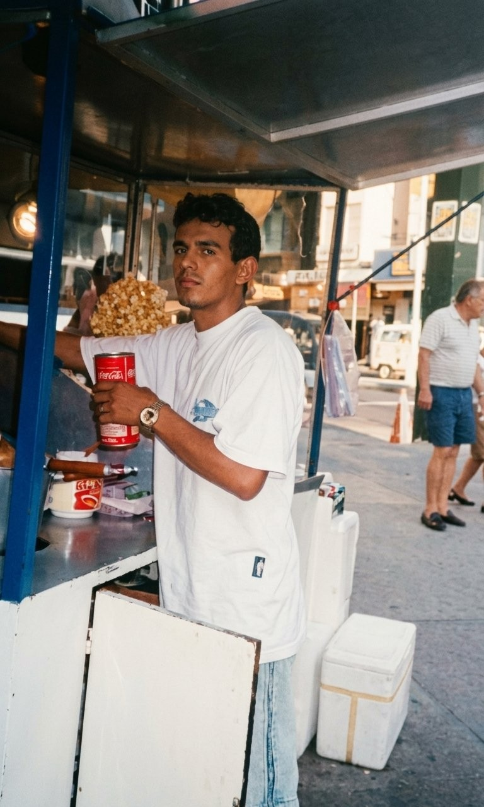
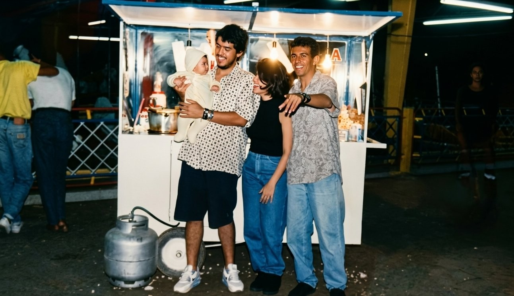

Feito à mão, com amor e memória. Uma tradição de família que atravessa gerações.
"Cada pipoca conta uma história."

Valter Reis serviu à Marinha do Brasil e trabalhou como desenhista projetista — um homem que construía sonhos no papel enquanto sonhava com o próprio futuro.
Com a chegada do filho Gabriel, tomou a decisão mais nobre: deixou a estabilidade da Marinha para estar presente. Foi cobrador de ônibus, camelô, enfrentou sol forte e dias difíceis — mas nunca deixou faltar amor dentro de casa.
"Até que encontrou na pipoca não apenas um sustento, mas um propósito."

Do Méier ao mundo, Valter conquistou clientes não apenas pelo sabor, mas pelo jeito humano e acolhedor com que tratava cada pessoa.
Conquistou seu ponto fixo em Campo Grande, onde criou três filhos: Gabriel, Gustavo e Yasmim — ensinando humildade, trabalho duro e amor ao próximo.
Em 2021, Valter partiu. Hoje, seus filhos seguem à frente da marca, carregando não apenas um nome, mas um legado.
A Lei 8.243/2024 reconheceu os pipoqueiros como Patrimônio Cultural Imaterial da cidade do Rio de Janeiro — um título que celebra décadas de tradição, presença e afeto nas ruas cariocas.
A Valter Popcorn faz parte dessa história. Somos mais que um negócio: somos memória afetiva de Campo Grande.
🍿 Venha nos conhecer
Ponto fixo em Campo Grande, Rio de Janeiro
Embalagem artesanal em papel kraft · Feito na hora